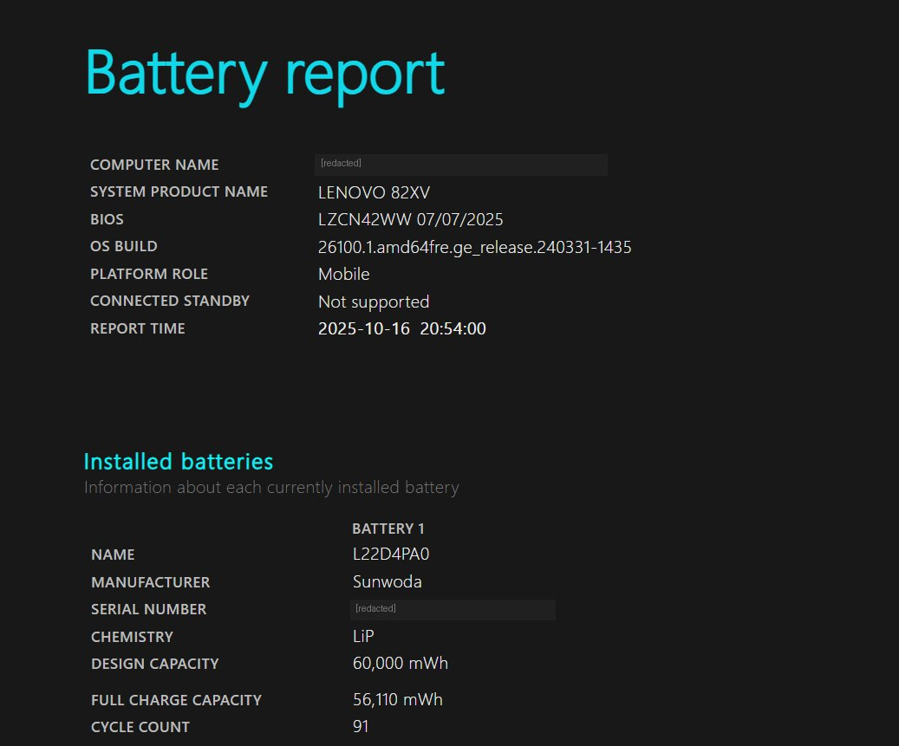

How to check laptop battery health before buying used
"Battery bilkul sahi hai, 5 ghante chalti hai." I hear this sentence every day, and about half the time the battery report says otherwise. The good news: Windows has a built-in tool that tells you the truth in about sixty seconds, no download needed, and any seller who won't let you run it has just answered your question.
Run the report
On the laptop you're inspecting:
- Press the Windows key, type
cmd, right-click Command Prompt, choose "Run as administrator" - Type exactly:
powercfg /batteryreportand press Enter - It prints a file path, usually something like
C:\Users\Name\battery-report.html - Open that file in any browser
The whole thing takes less than a minute and touches nothing on the machine. It only reads what Windows has already been recording.
The two numbers that matter
Scroll to the section called "Installed batteries". You want these two rows:

Now compare that to a machine that came in last week: Design Capacity 45,000 mWh, Full Charge Capacity 27,900 mWh. That's 62% health. The seller had described it as "battery new jaisi". The laptop was otherwise good, so the customer bought it and budgeted for a replacement — which is the right way to use this number.
Same report, same two rows, completely different machines. You can tell them apart in ten seconds once you know where to look.
How to read the percentage
- 90%+ — barely used. Rare on a used machine, and slightly suspicious if the power-on hours are high (the battery may have been swapped, which isn't bad, just worth asking about).
- 75–90% — normal for a 3-year-old business laptop. You'll get decent backup. No action needed.
- 60–75% — noticeably shorter backup. Fine if you mostly work plugged in. Use it to negotiate.
- Below 60% — the battery is near the end. Assume replacement cost and subtract it from what you offer.
Also check: cycle count and recent usage
Further down, the report shows "Cycle Count" (how many times the battery has been fully charged and drained). Under 500 is comfortable; over 1,000 means heavy use. Some manufacturers don't report this — a blank field isn't a red flag by itself.
The "Battery usage" and "Battery capacity history" sections show the last few days and the last few months. If capacity dropped sharply in recent months, the battery is degrading fast right now, not slowly. That's worse than a low-but-stable number.
What a replacement actually costs
For most business laptops in the Delhi market, a decent compatible battery runs ₹2,000–3,500, and a genuine OEM one ₹4,000–6,000. Installation is 10–15 minutes on models with an external battery, longer on newer sealed ones.
So a battery at 55% health is roughly a ₹2,500–3,000 problem. If the laptop is otherwise excellent and priced ₹4,000 below the market, that's still a good deal. If it's priced the same as a healthy unit, you're overpaying — and now you can say exactly why.
The one non-negotiable
If a seller refuses to let you open Command Prompt on a laptop they're selling, walk away. It's a sixty-second read-only command. The refusal tells you what the report would have.